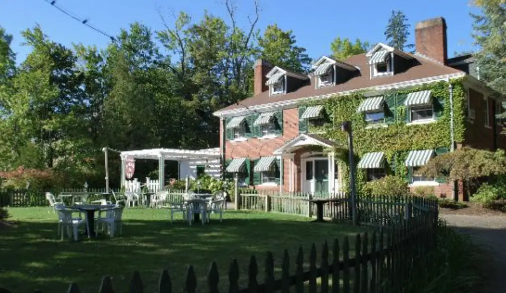
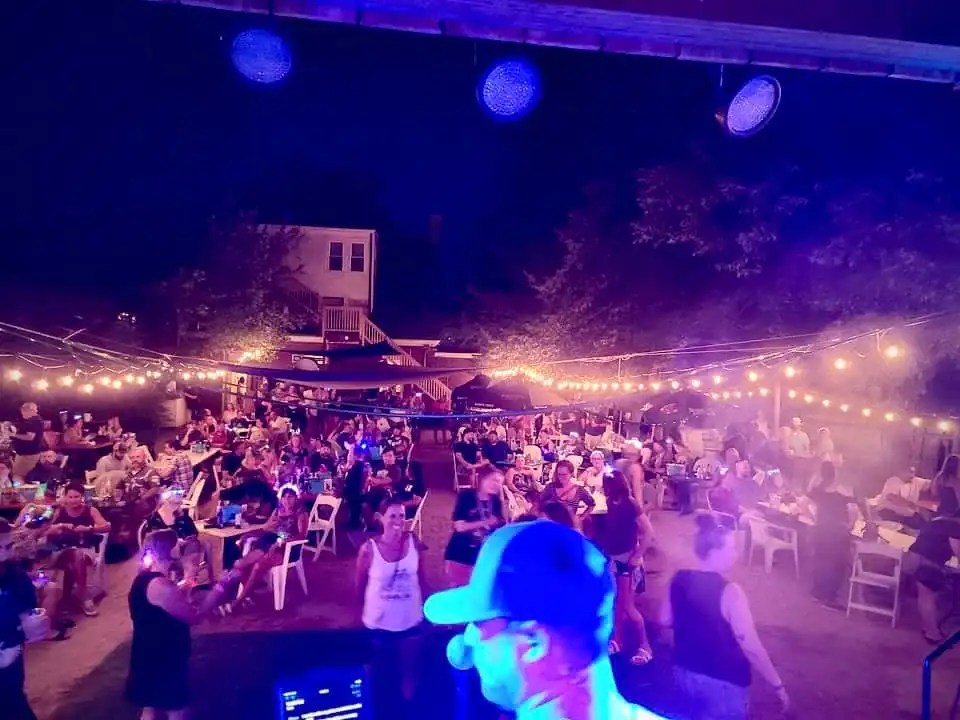

Dinner downstairs. Music out back. Twenty rooms up the old staircase.

The Governor's Inn keeps the historic Spaulding estate busy, flame-broiled steaks at Spaulding Steak & Ale, live music five nights a week, weddings on the lawn, and breakfast for whoever stayed the night.
Straight off the letterboard
This week at the inn: serving dinner Tuesday to Sunday, Sunday brunch 8 AM to 2 PM, The Garage is open with live bands Friday and Saturday, Sunday concerts 5 to 8, trivia Tuesdays, acoustic Wednesdays, twenty rooms up top with breakfast included, weddings on the lawn. Call (603) 332-0107, 78 Wakefield Street.
Steaks in the old rooms, pints in the garden
Two restaurants on one estate, white-tablecloth dinners inside, cold pints and live bands out back.
Spaulding Steak & Ale
The estate's original dining rooms
Flame-broiled steaks, chicken, and fresh seafood, with nightly food and drink specials on the chalkboard. Dinner opens with happy hour.
- DinnerTuesday – Saturday, from 4 PM
- BrunchSunday, 8 AM – 2 PM · New!
- TakeoutVia Toast, every night we're open

The Garage
Beer garden · May – October
The seasonal hangout out back, dinner and drinks on the patio, bands on the weekend, and Sunday shows to close it out.
- HoursFriday from 4 PM · Saturday from 2 PM
- BandsFriday & Saturday, 7 – 10 PM
- SundaysConcerts 5 – 8 PM · Summer dinner
Also at the inn
Trivia Night
In the Great Hall, order food and drinks while you play.
Billiards
The Huntly Room, below the ballroom, APA tables, open to the public. Bring quarters; order from the table via Toast.
Five nights a week, all year long
The weekly rhythm
- TuesdayTrivia Night · 6:30 PMThe Great Hall
- WednesdayAcoustic Night · FreeSpaulding · 6 – 9 PM
- ThursdayAcoustic at Spaulding · Bands at The Garage6 – 9 PM
- FridayLive BandsThe Garage · 7 – 10 PM
- SaturdayLive BandsThe Garage · 7 – 10 PM
- SundayConcerts · May – OctThe Garage · 5 – 8 PM
Acoustic nights at Spaulding are always free. Weekend bands at The Garage are usually a $7 cover, $10 for select shows and festivals.
This summer's lineup
Booked through August, weekends may vary with the weather. Past dates tidy themselves away.
- Fri, Jul 31Country RoadsGarage · 7–10
- Sat, Aug 1Folically ChallengedGarage · 7–10
- Sun, Aug 2RockspringGarage · 5–8
- Wed, Aug 5Josh SmithSpaulding · 6–9
- Thu, Aug 6Double Take TrioGarage · 5–8
- Fri, Aug 7CurmudjunGarage · 7–10
- Sat, Aug 8Acoustic RadioGarage · 7–10
- Sun, Aug 9C. Bonoli & Blue MonstersGarage · 5–8
- Wed, Aug 12Eric BissonSpaulding · 6–9
- Thu, Aug 13Rust & PineGarage · 6–9
- Fri, Aug 14Dancing Madly BackwardsGarage · 7–10
- Sat, Aug 15Robb and JodyGarage · 7–10
- Sun, Aug 16Double Take TrioGarage · 5–8
- Wed, Aug 19Ethan CunninghamSpaulding · 6–9
- Fri, Aug 21Conniption FittsGarage · 7–10
- Sat, Aug 22World Famous ToesGarage · 7–10
- Sun, Aug 23Whiskey Bent & The HellhoundsGarage · 5–8
- Wed, Aug 26Due SouthSpaulding · 6–9
- Fri, Aug 28RosieGarage · 7–10
- Sat, Aug 29Matty / PendersGarage · 7–10
- Sun, Aug 30Nathan Hill & friendsGarage · 5–8
September and October are being booked now; the season closes with the annual Halloween party, then The Garage rests until May. For this week's confirmed acts, check the inn on Facebook or call (603) 332-0107.
The 2026 Outdoor Music Series is made possible by
- 603 Technology Solutions
- Tim Noonan Construction
- Bourque's Flooring
- Jet Pack Comics
- State Farm, Peggy Lynch
- Hervey's Tire
- Feliciano Limousine
- Holy Rosary Credit Union
- The Rochester Voice
- Rochester Opera House
Want to be part of the series? Ask about sponsoring.


Twenty rooms, no two alike
When the last set ends, take the old staircase up. Every room is original, some eclectic, some historic, some suited to longer stays, and every one has a private bath, air conditioning, cable, free local calls, and high-speed wireless. A continental-plus breakfast is included in the morning.
The whole estate, yours for a day
Ceremonies in the gardens at the gazebo, dinner and dancing under the tented courtyard, and the ballroom for any season. The inn hosts wedding ceremonies and receptions, rehearsal dinners, birthday and anniversary parties, baby and bridal showers, celebrations of life, and business and fundraiser events.
- Open airThe gardens & gazebo
- Under canvasThe tented courtyard
- Any seasonThe ballroom

The event spaces


Questions we hear the most
-
What are the dinner hours at The Governor's Inn?
Spaulding Steak & Ale, the steakhouse at The Governor's Inn in Rochester, NH, serves dinner Tuesday through Saturday from 4 PM, opening with happy hour. Sunday brunch runs 8 AM to 2 PM. Call (603) 332-0107 to hold a table.
-
Does The Governor's Inn have rooms to stay overnight?
Yes. The Governor's Inn is a twenty-room hotel on the historic Spaulding estate in Rochester, NH. Every room is original: some eclectic, some historic, some suited to longer stays. All have a private bath, A/C, cable, free local calls, and high-speed wireless, with a continental-plus breakfast included. Book online through the inn's reservation page or call (603) 332-0107.
-
Is there live music at The Governor's Inn?
Yes, five nights a week in Rochester, NH: free acoustic sets Wednesday and Thursday 6–9 PM at Spaulding Steak & Ale, live bands Friday and Saturday 7–10 PM at The Garage beer garden (May–October), and Sunday concerts 5–8 PM. Weekend bands are usually a $7 cover, $10 for select shows. Trivia runs Tuesdays at 6:30 PM in the Great Hall.
-
When is The Garage beer garden open?
The Garage, the outdoor beer garden and stage at The Governor's Inn, runs May through October: Fridays from 4 PM, Saturdays from 2 PM, live bands 7–10 PM, and Sunday concerts 5–8 PM, with dinner at The Garage on summer Sundays. The season closes with the annual Halloween party, then The Garage rests until May.
-
Can I order takeout from The Governor's Inn?
Yes. Takeout is available via Toast every night the restaurant is open. Order online at the Spaulding Steak & Ale Toast page or call (603) 332-0107.
-
Can The Governor's Inn host weddings and private events?
Yes. The Governor's Inn is a wedding and event venue on the historic Spaulding estate in Rochester, NH: ceremonies in the gardens at the gazebo, receptions under the tented courtyard or in the ballroom, plus rehearsal dinners, birthdays, anniversaries, baby and bridal showers, celebrations of life, and business and fundraiser events. Call (603) 332-0107 or email the events team.
-
Where is The Governor's Inn located?
78 Wakefield Street, Rochester, NH 03867, the historic Spaulding estate. Look for the hanging Restaurant & Hotel sign out front.
Look for the sign on Wakefield Street
The hanging Restaurant & Hotel sign has marked the corner of the estate for as long as anyone can remember. When you see it, you're here.
- Address78 Wakefield Street, Rochester, NH 03867
- Phone(603) 332-0107 · best 9 AM – 5 PM
- Emailthegovernorsinn@gmail.com
- DinnerTuesday – Saturday, from 4 PM
- BrunchSunday, 8 AM – 2 PM
- Front deskCall ahead for check-in